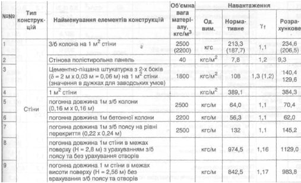

Розробити таблицю з інформацією про навантаження елементів конструкцій. Вид таблиці:
| №№ | Тип конструк- цій |
Найменування елементів конструкції | Об'ємна вага матері- алу, кгс/м³ |
Навантаження | |||
|---|---|---|---|---|---|---|---|
| Од. вим. |
Норма- тивне |
γ₁ | Розра- хункове |
||||
| 1 | Стіни | З/б колона на 1 м² стіни | 2500 (2200) |
кгс | 213,3 (187,7) |
1,1 | 234,6 (206,5) |
| 2 | Стінова полістирольна панель | 40 | кгс/м² | 7,8 | 1,2 | 9,3 | |
| 3 | Цементно-піщана штукатурка з 2-х боків (δ = 2 м х 0,03 м = 0,06 м) на 1 м² стіни (значення в дужках для заводських умов) |
1800 | кгс/м² | 108 | 1,3 (1,2) | 140,4 129,6 |
|
| 4 | 1 м² стіни | кгс/м² | 389,1 | 384,3 | |||
| 5 | погонна довжина 1 з/б колони (0,16 м х 0,16 м) |
2500 | кгс/м | 64 | 1,1 | 70,4 | |
| 6 | погонна довжина 1 м бетонної колони | 2200 | кгс/м | 56,3 | 1,1 | 62,0 | |
| 7 | погонна довжина 1 м з/б поясу на рівні перекриття (0,22 х 0,24 м) |
2500 | кгс/м | 132 | 1,1 | 145,2 | |
| 8 | погонна довжина 1 м стіни в межах поверху (H = 2,8 м) з урахуванням з/б поясу та без урахування отворів |
кгс/м | 974,5 | 1,16 | 1129,0 | ||
| 9 | погонна довжина 1 м стіни в межах висоти поверху (H = 2,56 м) без врахування з/б поясу та отворів |
кгс/м | 842,5 | 1,17 | 983,8 | ||